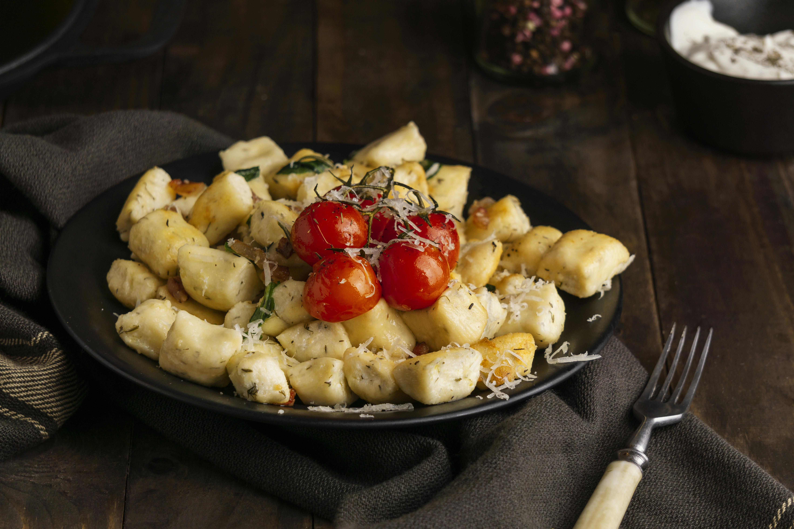

Home
Potato Gnocchi

Description
An easy Italian Pasta Dish recipe, Homemade Potato Gnocchi, made with only 4 ingredients. Tossed in a simple tomato sauce. These soft, delicate Gnocchi will make a delicious Dinner idea.
Ingredients
Steps
- In a large pot boil un peeled potatoes until tender, remove from the pot and let cool enough to handle, then remove the skin.
- Then pass through a Potato Ricer or mash.
- On a flat surface mix together the flour and salt make a well in the middle and add the potatoes and egg, mix together with your fingers to form a soft dough, it should not stick to your fingers.
- On a lightly floured surface, cut small amounts of dough to form ropes and cut into 3/4 inch (2 cm) pieces, then slide each piece on a fork and squeeze a little (but not too hard).
- Sprinkle with a little bit of flour and toss, so they don’t stick together.
- Let the gnocchi rest for 20 minutes before cooking.
- In a large pot of salted boiling water cook the gnocchi, gnocchi are ready when they float to the top.
- Drain and toss with desired sauce.